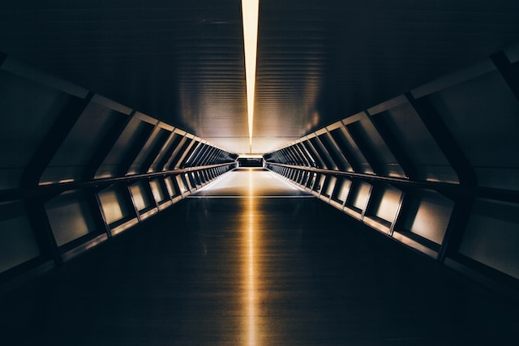
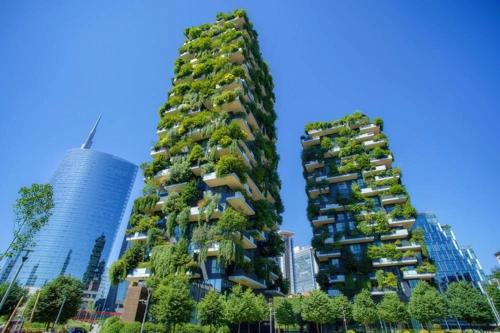
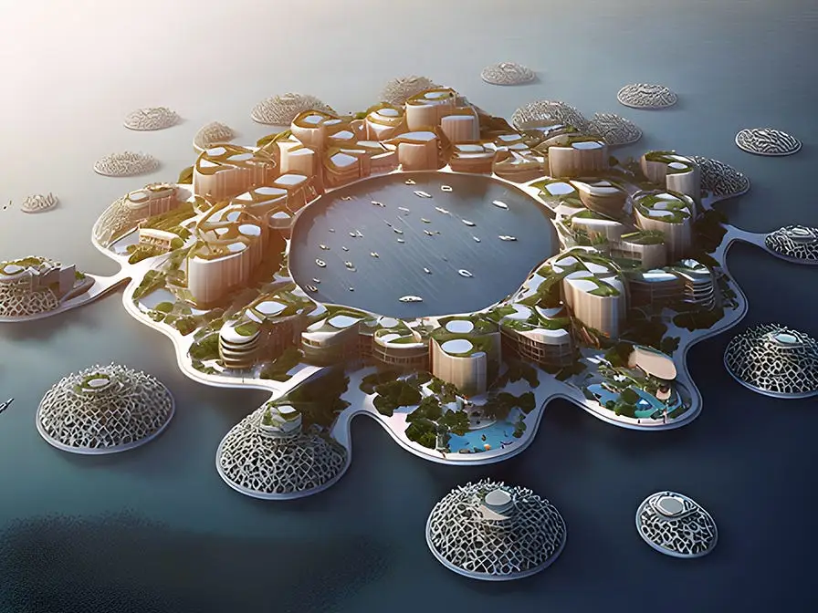
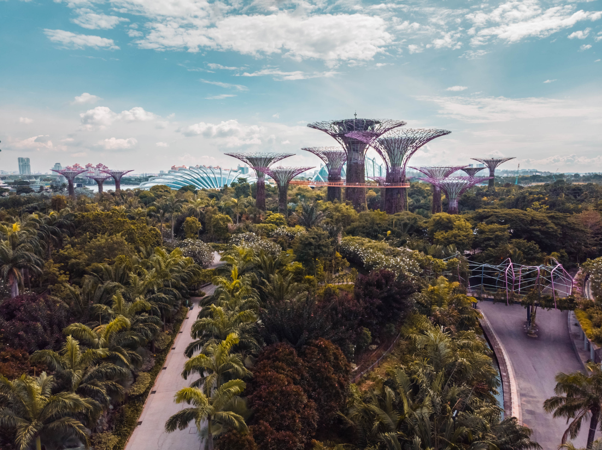
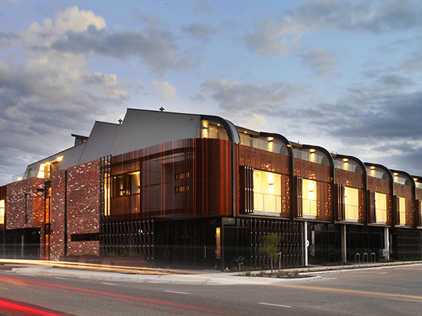

Welcome to ENGINEERING THE FUTURE. Here you will find information about the company and ongoing projects currently in development
 As cities continue to grow and space becomes scarce, architects are embracing the concept of vertical gardens to create sustainable and green urban environments.
 With the threat of rising sea levels due to climate change, architects are designing floating cities as a proactive response.
 Biophilic skyscrapers are a futuristic take on sustainable urban living, aiming to enhance occupants' well-being by integrating nature into their daily lives.
 Adaptive reuse is a sustainable and innovative approach to repurposing existing buildings or structures for new functions and purposes.
"Climbing the ladder of progress, engineering and development shall forge a trail into a future where the impossible becomes achievable, the intricate turns effortless, and the once distant dreams emerge as tangible realities, woven together by the unwavering spirit of innovation." - Anonymous